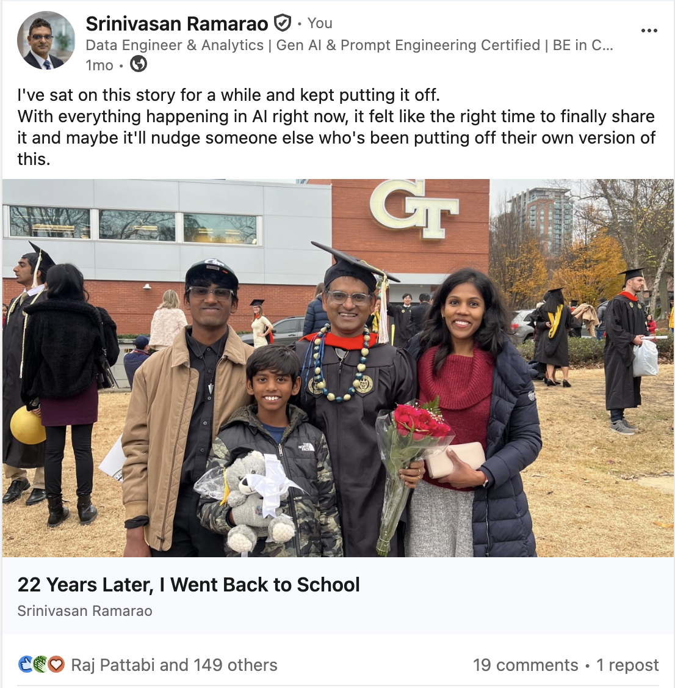
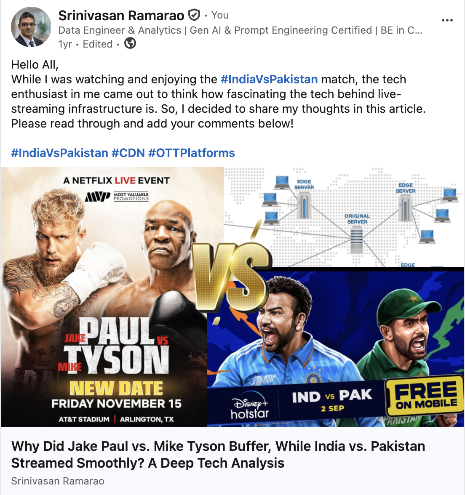
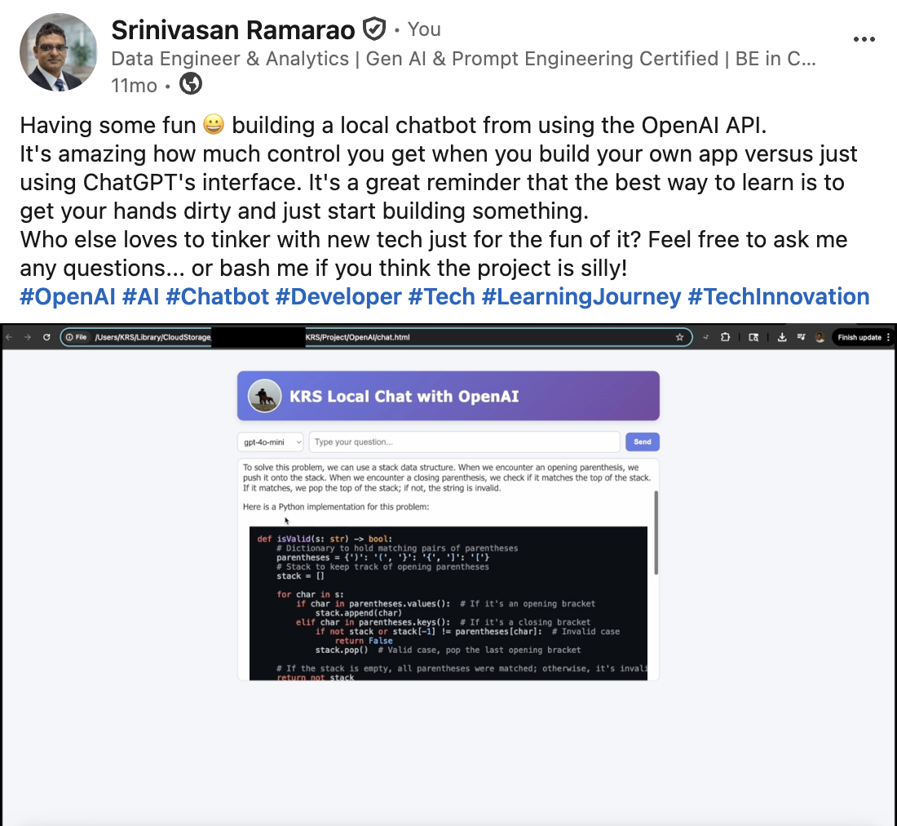
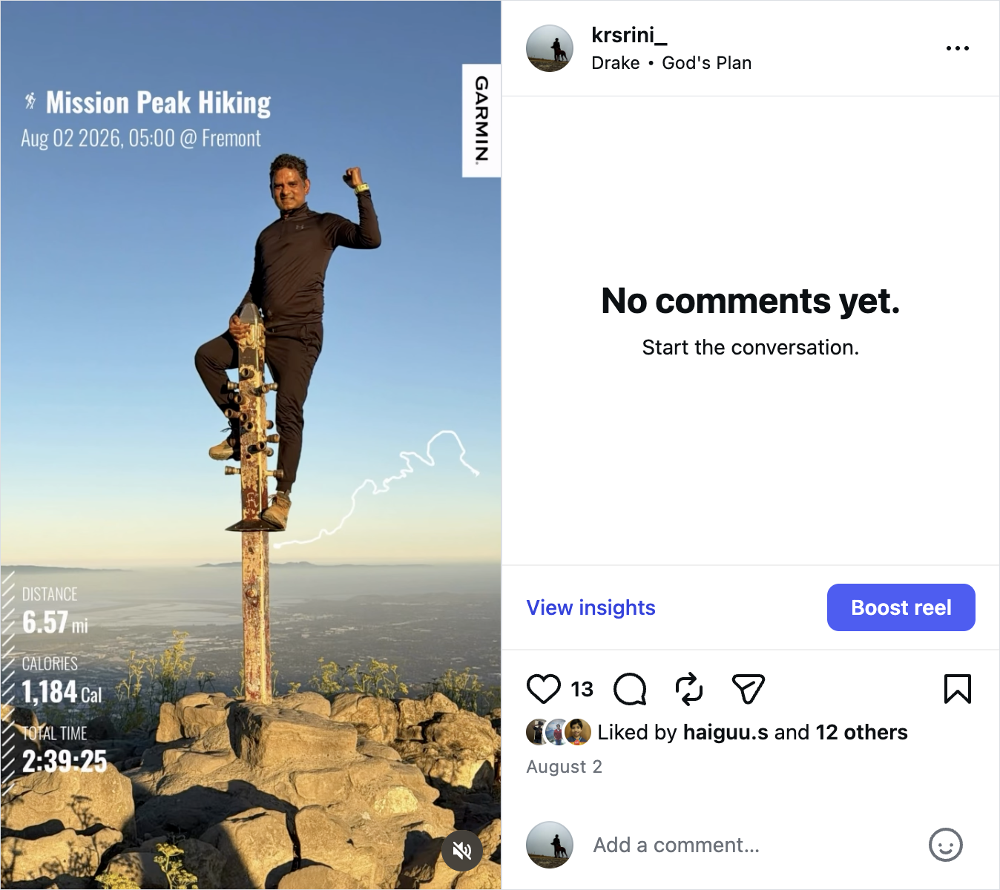
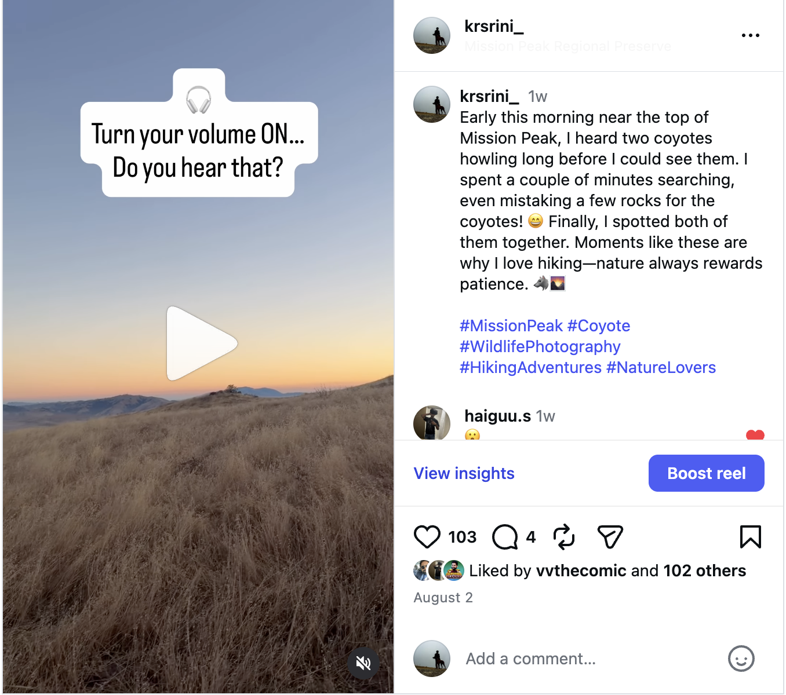
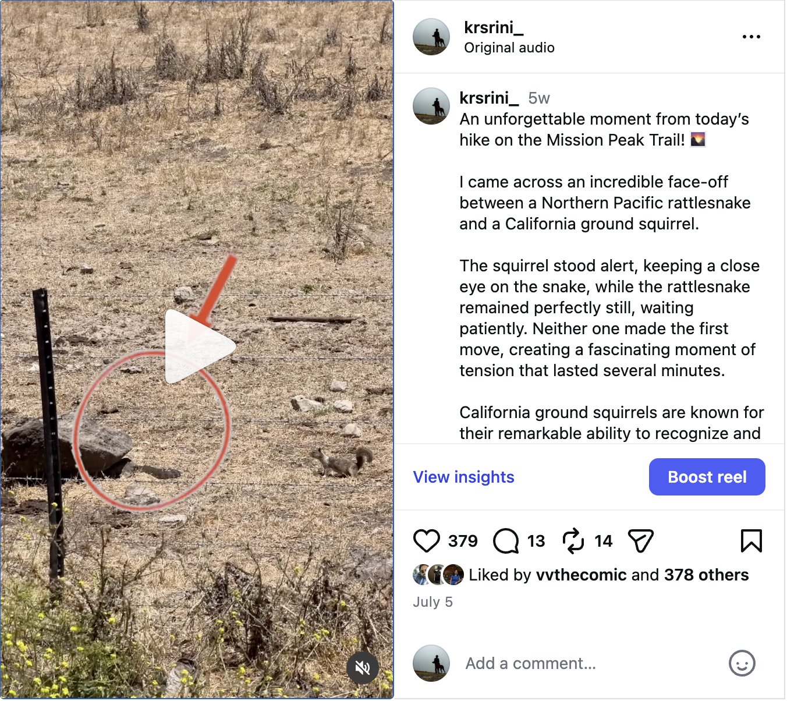

Staff Designated Support Engineer
Snowflake · Data cloud, customer impact, and the next chapter of enterprise AI.
I'm Srinivasan (KRS) Ramarao, a data and analytics leader with 25+ years of experience, now exploring what becomes possible when GenAI meets real-world systems and human imagination.
From enterprise platforms and multi-terabyte warehouses to modern cloud data and GenAI, my career has been a long practice in learning, scaling, and making complex systems dependable.
Snowflake · Data cloud, customer impact, and the next chapter of enterprise AI.
Oracle · Nine and a half years building and leading at enterprise scale.
Citrix, CSC, Hexaware, Ramco and consulting roles across cloud, warehousing, analytics, and ERP.

A personal reflection about carrying a story long enough to understand what it means, then finally sharing it.
Read on LinkedIn ↗
A practical look at high-traffic streaming, CDN behavior, and what live events teach us about resilient digital infrastructure.
Read on LinkedIn ↗
A hands-on learning note about tinkering with the OpenAI API, building locally, and learning by making something real.
Read on LinkedIn ↗I turn ambiguous ideas into practical AI workflows, shaping the experience, connecting the right tools, and making the result genuinely useful.
I build clean, modern digital products where structure, interaction, and visual language work as one.
I find the manual seams in everyday work and replace them with thoughtful systems that are faster, clearer, and easier to trust.
"Keep learning. Keep building. Stay curious enough to begin again."
Look past the request to understand what actually needs to change.
Prototype early so ideas become concrete, discussable, and better.
Care deeply about the details that create confidence and momentum.
Technology is part of my life, not the whole of it. The things I do away from a keyboard keep me observant, patient, and open to a better angle.
Miles on a trail reset my perspective, one switchback, summit, and quiet view at a time.
I love turning moments into visual stories: noticing light, pacing emotion, and finding the shot that says more.
Dogs have a talent for presence, joy, and getting us outside. I'm happily part of their fan club.
Forests, coastlines, mountains, and unfamiliar roads. I'm drawn to places that make the world feel bigger.

A recent Mission Peak hike with blue-sky views, steady miles, and a summit-state-of-mind reset.
Watch on Instagram ↗
A quiet trail moment turned wild: coyotes howling near the top before the day fully arrived.
Watch on Instagram ↗
A rattlesnake and ground squirrel face-off on the Mission Peak trail, nature drama in miniature.
Watch on Instagram ↗Workflows, agents, integrations, rapid experiments
Framing, user journeys, feature shaping, prioritization
Modern interfaces, prototypes, responsive web experiences
Narratives, documentation, decision-ready synthesis